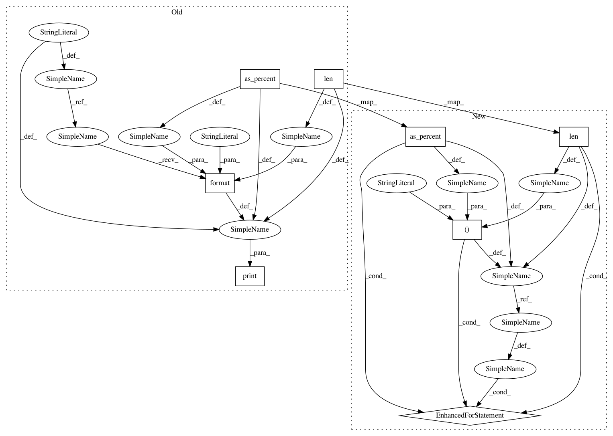

c2ba425358ed9d57139bba87b7716c544b85cc71,soynlp/pos/_news_pos.py,NewsPOSExtractor,_word_match_postprocessing,#NewsPOSExtractor#,112
Before Change
if self._verbose:
print("\r[POS Extractor] postprocessing was done 100.00 % ")
print("[POS Extractor] //// statistics ////")
templates = "[POS Extractor] {} ({:.3f} %): {}"
print(templates.format(len(nouns_), as_percent(nouns_), "Noun + [Josa/Predicator]"))
print(templates.format(len(confused_nouns), as_percent(confused_nouns), "Confused nouns"))
print(templates.format(len(adjectives_), as_percent(adjectives_), "[Noun] + Adjective"))
print(templates.format(len(verbs_), as_percent(verbs_), "[Noun] + Verb"))
print(templates.format(len(not_covered), as_percent(not_covered), "not covered"))
return nouns_, confused_nouns, adjectives_, verbs_, not_covered
After Change
if self._verbose:
print("\r[POS Extractor] postprocessing was done 100.00 % ")
print("\n[POS Extractor] //// statistics ////")
statistics = [
(len(nouns_), as_percent(nouns_), "Noun + [Josa/Predicator]"),
(len(confused_nouns), as_percent(confused_nouns), "Confused nouns"),
(len(adjectives_), as_percent(adjectives_), "[Noun] + Adjective"),
(len(verbs_), as_percent(verbs_), "[Noun] + Verb"),
(len(not_covered), as_percent(not_covered), "not covered")
]
for stats in statistics:
print("[POS Extractor] {} ({:.3f} %): {}".format(*stats))
return nouns_, confused_nouns, adjectives_, verbs_, not_covered
def _word_match(self, word, references):
if word in references:
In pattern: SUPERPATTERN
Frequency: 5
Non-data size: 8
Instances
Project Name: lovit/soynlp
Commit Name: c2ba425358ed9d57139bba87b7716c544b85cc71
Time: 2018-11-13
Author: soy.lovit@gmail.com
File Name: soynlp/pos/_news_pos.py
Class Name: NewsPOSExtractor
Method Name: _word_match_postprocessing
Project Name: lovit/soynlp
Commit Name: c2ba425358ed9d57139bba87b7716c544b85cc71
Time: 2018-11-13
Author: soy.lovit@gmail.com
File Name: soynlp/pos/_news_pos.py
Class Name: NewsPOSExtractor
Method Name: _word_match_postprocessing